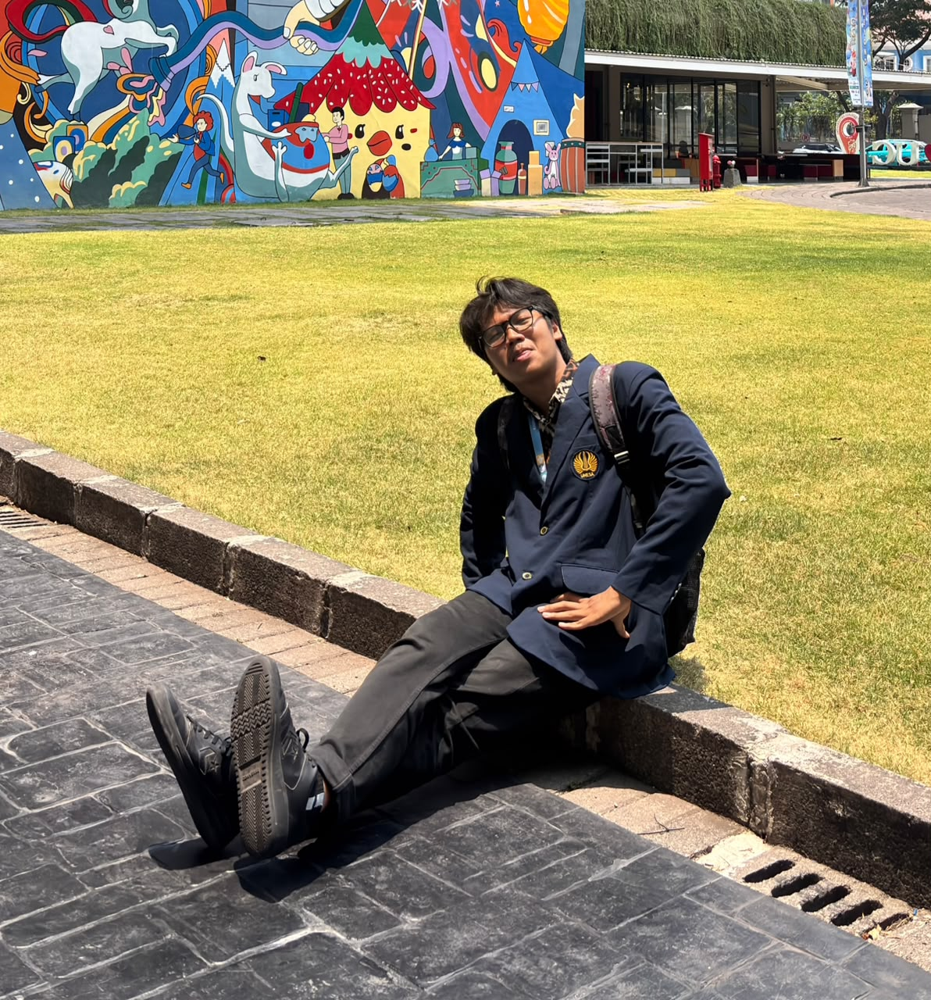
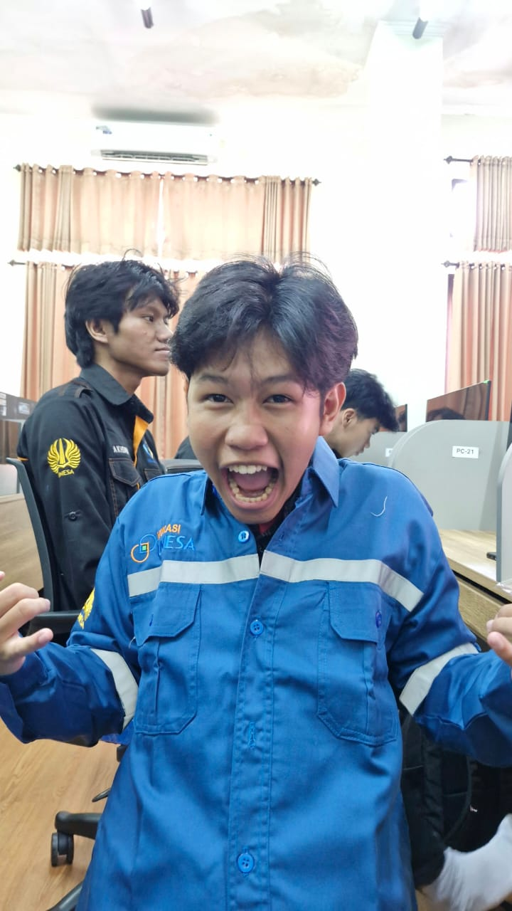

Latar Belakang
Mahasiswa sering menghadapi banyak tugas dari berbagai mata kuliah dengan tenggat waktu yang berbeda. MyTask dikembangkan sebagai solusi sederhana untuk mencatat dan memantau tugas dalam satu halaman.
ABOUT OUR PROJECT
Cara sederhana untuk mengelola tugas kuliah, menjaga produktivitas, dan membantu mahasiswa lebih terorganisasi.
Mulai Kelola TugasMahasiswa sering menghadapi banyak tugas dari berbagai mata kuliah dengan tenggat waktu yang berbeda. MyTask dikembangkan sebagai solusi sederhana untuk mencatat dan memantau tugas dalam satu halaman.
MyTask bertujuan membantu mahasiswa mencatat tugas, mengetahui tugas yang belum selesai, memantau progres, dan menyelesaikan pekerjaan dengan lebih teratur.
Fungsi yang tersedia di dalam aplikasi MyTask.
Catat informasi tugas dan perbarui atau hapus sesuai kebutuhan.
Tandai tugas sebagai selesai atau belum selesai.
Temukan tugas berdasarkan kata kunci dan statusnya.
Lihat jumlah seluruh tugas, pending, dan selesai.
Pilih tema terang atau gelap; preferensi disimpan di browser.
Data tersimpan di browser menggunakan localStorage pada perangkat dan browser yang sama.
Kenali tim di balik pengembangan website MyTask.

Front-End Developer

UI/UX Designer

Web Developer
PROJECT SCOPE
MyTask merupakan proyek pembelajaran Pemrograman Web. Aplikasi berjalan di sisi browser dan tidak menggunakan server atau basis data online. Data tugas tersimpan secara lokal.